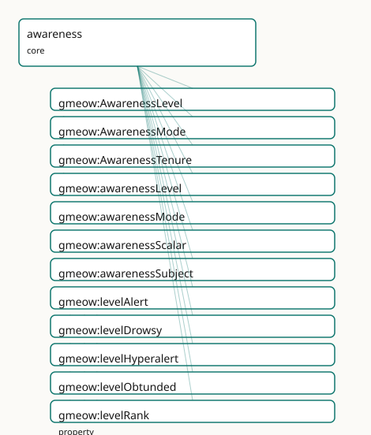

GMEOW Awareness Module
- IRI: https://blackcatinformatics.ca/gmeow/slices/awareness
- Tier: core
Group: core
What This Slice Covers
This slice owns 31 terms and contributes 3 mapping or projection rows. Use it when its terms match the native fact you want to preserve; use the linkage tables to see how those facts leave GMEOW for consumer vocabularies.
Dependencies
Consumers
- AI operational-state provenance and human consciousness modelling (Principle 15) — a stored claim can record the operational state of the experiencer that formed it: was it formed during
gmeow:modeOnlineInference(live serving) versusgmeow:modeOfflineReplay(offline rumination over logged context) orgmeow:modeTraining, and at what sampling regime (gmeow:awarenessScalar)? The human face models consciousness, sleep staging, meditation, and clinical arousal (gmeow:levelObtunded/gmeow:levelUnresponsivemapping to the Glasgow Coma Scale by reference); agmeow:AwarenessTenurepins each state to a temporal interval (temporal slice). Dreaming and lucidity compose here by reference:gmeow:modeLucidDreamingisgmeow:modeDreamingwith metacognition (gmeow:MetacognitiveState) online, documented at the seam, never re-minted.
Local Map

Examples
Ai Inference Regime
- Source:
slices/core/awareness/examples/ai-inference-regime.ttl - GMEOW terms:
gmeow:Agent,gmeow:AwarenessTenure,gmeow:TimeInterval,gmeow:awarenessMode,gmeow:awarenessScalar,gmeow:awarenessSubject,gmeow:duringInterval,gmeow:endedAtTime,gmeow:hasTemporalFrame,gmeow:modeOnlineInference - External prefixes:
owl,xsd
# SPDX-FileCopyrightText: 2026 Blackcat Informatics® Inc. <paudley@blackcatinformatics.ca>
# SPDX-License-Identifier: CC-BY-4.0
#
# Worked example — an AI agent's operational-state regime, the Principle-5 bridge.
# The same gmeow:AwarenessTenure machinery that records a human's sleep records a
# machine's operational state: a live serving window (gmeow:modeOnlineInference),
# a weight-updating training run (gmeow:modeTraining), and a free-running generative
# pass (gmeow:modeSampling), each scoped to a temporal interval and each carrying a
# continuous gmeow:awarenessScalar (a temperature-like regime value). These machine
# modes are SIBLINGS of the human modes in ONE open vocabulary, bridged to human
# waking / dreaming / mind-wandering by ANALOGY, NOT by equivalence (no owl:sameAs,
# no owl:equivalentClass) — substrate-specific realisations of the awareness faculty.
@prefix gmeow: <https://blackcatinformatics.ca/gmeow/> .
@prefix ex: <https://blackcatinformatics.ca/gmeow/examples/awareness/> .
@prefix rdfs: <http://www.w3.org/2000/01/rdf-schema#> .
@prefix xsd: <http://www.w3.org/2001/XMLSchema#> .
# --- The machine experiencer. An AI agent is a gmeow:Agent like any other.
ex:lillith a gmeow:Agent ;
rdfs:label "Lillith (AI agent)"@en .
# --- A live serving window — online inference, the machine analogue of waking. A
# claim formed within this tenure can record that it was formed during live
# serving (operational-state provenance for the agent-memory flagship).
ex:servingTenure a gmeow:AwarenessTenure ;
rdfs:label "a live serving window"@en ;
gmeow:awarenessSubject ex:lillith ;
gmeow:awarenessMode gmeow:modeOnlineInference ;
gmeow:awarenessScalar 0.7 ;
gmeow:duringInterval ex:requestInterval .
ex:requestInterval a gmeow:TimeInterval ;
rdfs:label "the request window"@en ;
gmeow:hasTemporalFrame gmeow:temporalFrameUTCGregorian ;
gmeow:startedAtTime "2026-06-16T14:00:00Z"^^xsd:dateTime ;
gmeow:endedAtTime "2026-06-16T14:00:03Z"^^xsd:dateTime .
# --- A weight-updating training run — the machine analogue of a developmental /
# consolidative state, with no clean single human counterpart.
ex:trainingTenure a gmeow:AwarenessTenure ;
rdfs:label "a fine-tuning run"@en ;
gmeow:awarenessSubject ex:lillith ;
gmeow:awarenessMode gmeow:modeTraining ;
gmeow:awarenessScalar 0.5 ;
gmeow:duringInterval ex:trainingInterval .
ex:trainingInterval a gmeow:TimeInterval ;
rdfs:label "the training window"@en ;
gmeow:hasTemporalFrame gmeow:temporalFrameUTCGregorian ;
gmeow:startedAtTime "2026-06-14T00:00:00Z"^^xsd:dateTime ;
gmeow:endedAtTime "2026-06-15T00:00:00Z"^^xsd:dateTime .
# --- A free-running generative pass — sampling from latent space, the machine
# analogue (by analogy, not equivalence) of human mind-wandering / imagining,
# the regime where the temperature-like gmeow:awarenessScalar bites hardest and
# confabulation risk is highest.
ex:samplingTenure a gmeow:AwarenessTenure ;
rdfs:label "a free-running sampling pass"@en ;
gmeow:awarenessSubject ex:lillith ;
gmeow:awarenessMode gmeow:modeSampling ;
gmeow:awarenessScalar 0.95 ;
gmeow:duringInterval ex:samplingInterval .
ex:samplingInterval a gmeow:TimeInterval ;
rdfs:label "the sampling window"@en ;
gmeow:hasTemporalFrame gmeow:temporalFrameUTCGregorian ;
gmeow:startedAtTime "2026-06-16T15:00:00Z"^^xsd:dateTime ;
gmeow:endedAtTime "2026-06-16T15:00:02Z"^^xsd:dateTime .
Sleep Episode
- Source:
slices/core/awareness/examples/sleep-episode.ttl - GMEOW terms:
gmeow:Agent,gmeow:AwarenessTenure,gmeow:MetacognitiveState,gmeow:TimeInterval,gmeow:awarenessLevel,gmeow:awarenessMode,gmeow:awarenessSubject,gmeow:contentOrigin,gmeow:duringInterval,gmeow:endedAtTime - External prefixes:
xsd
# SPDX-FileCopyrightText: 2026 Blackcat Informatics® Inc. <paudley@blackcatinformatics.ca>
# SPDX-License-Identifier: CC-BY-4.0
#
# Worked example — a human night's sleep. An agent's awareness state over a night
# is reified as a gmeow:AwarenessTenure (gmeow:modeAsleep, gmeow:levelUnresponsive)
# scoped to a temporal interval. A nested REM sub-tenure (gmeow:modeREM /
# gmeow:modeDreaming) sits within it, and a still-finer gmeow:modeLucidDreaming
# moment marks the point at which metacognition comes ONLINE during the dream —
# the lucidity seam, documented BY REFERENCE in the prose comment, with NO triple
# asserted into the metacognition namespace. No truth or reality bit anywhere:
# the dream STATE is the gmeow:modeDreaming awareness value, and the dreamt
# content's source would be a reality-monitoring matter (gmeow:contentOrigin,
# imagination slice, by reference), never a flag here.
@prefix gmeow: <https://blackcatinformatics.ca/gmeow/> .
@prefix ex: <https://blackcatinformatics.ca/gmeow/examples/awareness/> .
@prefix rdfs: <http://www.w3.org/2000/01/rdf-schema#> .
@prefix xsd: <http://www.w3.org/2001/XMLSchema#> .
# --- The experiencer.
ex:lillith a gmeow:Agent ;
rdfs:label "Lillith"@en .
# --- The night-long sleep tenure: an agent in a mode over an interval.
ex:lillithSleep a gmeow:AwarenessTenure ;
rdfs:label "Lillith's night of sleep"@en ;
gmeow:awarenessSubject ex:lillith ;
gmeow:awarenessMode gmeow:modeAsleep ;
gmeow:awarenessLevel gmeow:levelUnresponsive ;
gmeow:duringInterval ex:nightInterval .
ex:nightInterval a gmeow:TimeInterval ;
rdfs:label "the night of 2026-06-15"@en ;
gmeow:hasTemporalFrame gmeow:temporalFrameUTCGregorian ;
gmeow:startedAtTime "2026-06-15T23:00:00Z"^^xsd:dateTime ;
gmeow:endedAtTime "2026-06-16T07:00:00Z"^^xsd:dateTime .
# --- A nested REM sub-tenure: rapid-eye-movement sleep, the vivid-dreaming stage.
# The same agent, two co-applying modes (REM stage + dreaming), a shorter span
# contained within the night interval.
ex:lillithREM a gmeow:AwarenessTenure ;
rdfs:label "Lillith's REM episode"@en ;
gmeow:awarenessSubject ex:lillith ;
gmeow:awarenessMode gmeow:modeREM , gmeow:modeDreaming ;
gmeow:awarenessLevel gmeow:levelUnresponsive ;
gmeow:duringInterval ex:remInterval .
ex:remInterval a gmeow:TimeInterval ;
rdfs:label "a REM period within the night"@en ;
gmeow:hasTemporalFrame gmeow:temporalFrameUTCGregorian ;
gmeow:startedAtTime "2026-06-16T04:10:00Z"^^xsd:dateTime ;
gmeow:endedAtTime "2026-06-16T04:35:00Z"^^xsd:dateTime .
# --- A still-finer lucid-dreaming moment within the REM episode. gmeow:modeLucidDreaming
# is, BY REFERENCE (the lucidity seam, Principle 6), gmeow:modeDreaming with
# metacognition (gmeow:MetacognitiveState, metacognition slice) ONLINE — the
# dreamer realises she is dreaming. That metacognitive composition is documented
# in PROSE ONLY; no triple is asserted into the metacognition namespace here.
ex:lillithLucid a gmeow:AwarenessTenure ;
rdfs:label "Lillith's lucid moment"@en ;
gmeow:awarenessSubject ex:lillith ;
gmeow:awarenessMode gmeow:modeLucidDreaming ;
gmeow:duringInterval ex:lucidInterval .
ex:lucidInterval a gmeow:TimeInterval ;
rdfs:label "the lucid moment within REM"@en ;
gmeow:hasTemporalFrame gmeow:temporalFrameUTCGregorian ;
gmeow:startedAtTime "2026-06-16T04:20:00Z"^^xsd:dateTime ;
gmeow:endedAtTime "2026-06-16T04:23:00Z"^^xsd:dateTime .
Terms
Classes
| Term | Label | Definition |
|---|---|---|
gmeow:AwarenessLevel |
Awareness Level | The graded level of arousal or vigilance — how alert the experiencer is, on an ordinal ladder from hyperalert down to unresponsive. A value vocabulary (individ... |
gmeow:AwarenessMode |
Awareness Mode | The named operational state of the experiencer — the qualitative mode of consciousness or processing an agent is in: waking, drowsy, asleep, dreaming, focused,... |
gmeow:AwarenessTenure |
Awareness Tenure | A reified situation of an agent BEING IN a given awareness mode OVER a bounded interval — a sleep episode, a focus or meditation session, a machine serving win... |
Properties
| Term | Label | Definition |
|---|---|---|
gmeow:awarenessLevel |
awareness level | Relates an experiencer — a gmeow:AwarenessTenure, or directly a process or agent — to its graded gmeow:AwarenessLevel (arousal / vigilance). The DOMAIN is left... |
gmeow:awarenessMode |
awareness mode | Relates an experiencer — a gmeow:AwarenessTenure, or directly a process or agent — to the named gmeow:AwarenessMode it is in. The DOMAIN is left intentionally... |
gmeow:awarenessScalar |
awareness scalar | A continuous, normalised arousal / vigilance value in [0.0, 1.0] — 0.0 unresponsive, 1.0 hyperalert. The continuous sibling of the named gmeow:awarenessLevel l... |
gmeow:awarenessSubject |
awareness subject | Relates a gmeow:AwarenessTenure to the gmeow:Agent whose awareness state it records — the experiencer in the mode over the interval. A per-branch bearer edge (... |
gmeow:levelRank |
level rank | The ordinal rank of a gmeow:AwarenessLevel on the arousal ladder — a small integer ordering the rungs from high arousal (gmeow:levelHyperalert, 5) down to none... |
Individuals
| Term | Label | Definition |
|---|---|---|
gmeow:levelAlert |
alert | Ordinary full wakeful alertness — the normal arousal baseline of an awake, attentive agent. The level typically accompanying gmeow:modeWaking and gmeow:modeFoc... |
gmeow:levelDrowsy |
drowsy | Reduced arousal verging on sleep — sleepy, with degraded attention and slowed response, the level accompanying gmeow:modeDrowsy and sleep onset. |
gmeow:levelHyperalert |
hyperalert | Heightened arousal above ordinary alertness — hypervigilance, the highest rung of the ladder. The arousal often accompanying acute stress or stimulant states. |
gmeow:levelObtunded |
obtunded | Markedly depressed arousal with blunted responsiveness — responsive only to vigorous or repeated stimulation, below stupor's threshold. A pathological low-arou... |
gmeow:levelRelaxed |
relaxed | Calm, lowered arousal while still fully conscious — restful wakefulness, the meditative or settled state below ordinary alertness but well above drowsiness. |
gmeow:levelUnresponsive |
unresponsive | No arousable response to stimuli — the lowest rung, the arousal floor of coma. Maps to the lowest Glasgow Coma Scale range by reference; the level carried by g... |
gmeow:modeAsleep |
asleep | The general sleep state — reversible disengagement from the environment with suspended volitional perception and action. The umbrella mode over the sleep stage... |
gmeow:modeComatose |
comatose | Coma — a state of profound unarousable unresponsiveness with no purposeful response to stimuli. The deepest pathological low-arousal mode, carrying gmeow:level... |
gmeow:modeDormant |
dormant | Idle / not running — a model loaded but not processing, or unloaded entirely: no forward pass, no learning. The machine analogue of human gmeow:modeAsleep or u... |
gmeow:modeDreaming |
dreaming | The state of experiencing a dream — endogenously generated quasi-perceptual content during sleep. The awareness-MODE value over a dreaming episode; the dreamin... |
gmeow:modeDrowsy |
drowsy | The hypnagogic transitional state between waking and sleep — reduced arousal and attention, sleep onset imminent. Distinct from full sleep: perception is degra... |
gmeow:modeFlow |
flow | The absorbed, effortless-attention state of optimal engagement (Csikszentmihalyi's flow, by reference) — total task immersion with diminished self-referential... |
gmeow:modeFocused |
focused | Concentrated, goal-directed attention — wakefulness with attention narrowed onto a task or object, the opposite pole of gmeow:modeMindWandering. Typically carr... |
gmeow:modeLucidDreaming |
lucid dreaming | Dreaming with metacognitive awareness that one is dreaming — gmeow:modeDreaming with metacognition (gmeow:MetacognitiveState, metacognition slice) ONLINE. The... |
gmeow:modeMeditative |
meditative | A deliberately cultivated contemplative state — focused-attention or open-monitoring meditation, distinct from both ordinary waking and drowsiness: relaxed yet... |
gmeow:modeMindWandering |
mind wandering | Task-unrelated, stimulus-independent thought during wakefulness — attention decoupled from the immediate environment and roaming over internally generated cont... |
gmeow:modeOfflineReplay |
offline replay | Offline rumination over logged or retrieved context, decoupled from live input — batch reprocessing, experience replay, memory consolidation runs. The machine... |
gmeow:modeOnlineInference |
online inference | Live forward-pass serving — a model processing a request and producing output in real time against present input. The machine analogue of human gmeow:modeWakin... |
gmeow:modeREM |
REM sleep | Rapid-eye-movement sleep — the sleep stage of vivid dreaming, desynchronised cortical activity, and skeletal-muscle atonia. The characteristic stage in which g... |
gmeow:modeSampling |
sampling | Generative free-running — the model sampling from its latent space with little or no external grounding, the regime in which gmeow:awarenessScalar (temperature... |
gmeow:modeSedated |
sedated | Pharmacologically depressed consciousness — arousal reduced by sedative or anaesthetic agents, ranging from light sedation to deep anaesthesia. A reversible, e... |
gmeow:modeTraining |
training | Weight-updating learning — the operational state in which a model's parameters are being adjusted by gradient descent or fine-tuning, distinct from inference.... |
gmeow:modeWaking |
waking | Ordinary alert wakefulness — the baseline conscious state in which an agent perceives, acts, and reasons online with the world. The human counterpart of the ma... |
Linkages
- Rows: 3
- Projection profiles: -
- External vocabularies:
prov,snomed
| Source | Kind | Profile | Predicate/Relation | Target | Evidence |
|---|---|---|---|---|---|
gmeow:levelUnresponsive |
equivalence | - |
skos:relatedMatch | snomed:371632003 | gmeow-awareness.sssom.tsv; gmeow:eqAwareness002; confidence 0.3 |
gmeow:modeAsleep |
equivalence | - |
skos:relatedMatch | snomed:248218005 | gmeow-awareness.sssom.tsv; gmeow:eqAwareness001; confidence 0.3 |
gmeow:modeOnlineInference |
equivalence | - |
skos:relatedMatch | prov:Activity | gmeow-awareness.sssom.tsv; gmeow:eqAwareness003; confidence 0.4 |
Guide
Awareness
The awareness slice adds the third orthogonal axis of mind. Where the imagination slice carries the content axis (WHAT is entertained) and the attitude verbs of epistemics and imagination carry the attitude axis (HOW it is held), awareness carries the state-of-the-experiencer axis: the operational mode of consciousness or processing — waking, asleep, focused, drowsy, dreaming — within which any content or attitude occurs. It is the load-bearing Principle-5 human↔machine bridge: a single open vocabulary holds the human awareness modes beside the machine operational modes as siblings, so a stored claim can record whether it was formed during live online-inference or offline replay, exactly as a human memory can record whether it was formed awake or in a dream.
The state-of-the-experiencer axis
A model of mind that records only what an agent entertains and how it holds it cannot represent the state the agent is in while doing so. The same proposition believed while alert and awake and believed while drowsy and sedated is the same content under the same attitude — but the awareness state differs, and for provenance that difference matters. Awareness is therefore orthogonal to both content and attitude: it answers neither what nor how but in what state of the experiencer.
Awareness modes (the bridge)
gmeow:AwarenessMode
gmeow:AwarenessMode is a value vocabulary (gufo:AbstractIndividualType ⊑
gufo:QualityValue) whose members are individuals, never subclasses (Principle 9,
the gmeow:ContentOrigin idiom). One open vocabulary holds the
human and machine modes as siblings, bridged by analogy, never by an asserted
owl:sameAs / owl:equivalentClass / rdfs:subClassOf (Principle 5).
Human modes
| Individual | State |
|---|---|
gmeow:modeWaking |
ordinary alert wakefulness |
gmeow:modeDrowsy |
hypnagogic transition toward sleep |
gmeow:modeAsleep |
the general sleep state (umbrella over the stages) |
gmeow:modeDreaming |
experiencing a dream (the act is gmeow:processDreaming, by reference) |
gmeow:modeREM |
rapid-eye-movement sleep, the vivid-dreaming stage |
gmeow:modeLucidDreaming |
dreaming with metacognition online (the lucidity seam) |
gmeow:modeMindWandering |
task-unrelated, stimulus-independent thought |
gmeow:modeFocused |
concentrated goal-directed attention |
gmeow:modeFlow |
absorbed, effortless-attention immersion |
gmeow:modeMeditative |
a cultivated contemplative state |
gmeow:modeSedated |
pharmacologically depressed consciousness |
gmeow:modeComatose |
profound unarousable unresponsiveness |
Machine modes — the Principle-5 bridge
| Individual | State | Human analogue (by analogy, not equivalence) |
|---|---|---|
gmeow:modeOnlineInference |
live forward-pass serving against present input | gmeow:modeWaking |
gmeow:modeOfflineReplay |
offline rumination over logged context | gmeow:modeDreaming |
gmeow:modeTraining |
weight-updating learning | (developmental / consolidative) |
gmeow:modeSampling |
generative free-running from latent space | mind-wandering / imagining |
gmeow:modeDormant |
idle, loaded but not running | gmeow:modeAsleep |
The machine modes are substrate-specific realisations of the awareness faculty,
not asserted equal to the human ones (umbrella guardrail). The analogue
column is documented in prose; no equivalence triple is minted. gmeow:awarenessMode
(open domain, range gmeow:AwarenessMode) marks an experiencer with its state, and
is non-functional and vantage-indexed (Principle 9): a self-reported mode and an
observer-attributed mode for the same span coexist, whose attribution rides
gmeow:accordingTo.
The arousal ladder and the scalar
gmeow:AwarenessLevel · gmeow:awarenessScalar
gmeow:AwarenessLevel is a second value vocabulary grading how alert the
experiencer is, on an ordinal ladder ordered high→low by an integer gmeow:levelRank:
| Individual | gmeow:levelRank |
|---|---|
gmeow:levelHyperalert |
5 |
gmeow:levelAlert |
4 |
gmeow:levelRelaxed |
3 |
gmeow:levelDrowsy |
2 |
gmeow:levelObtunded |
1 |
gmeow:levelUnresponsive |
0 |
The two lowest rungs (gmeow:levelObtunded, gmeow:levelUnresponsive) map to the
Glasgow Coma Scale by reference. gmeow:levelRank orders the rungs without
asserting a metric scale; for a continuous, normalised [0.0, 1.0] arousal value
(a vigilance index for a human, a temperature-like sampling regime for a machine)
use the gmeow:awarenessScalar datatype property, supplied instead of or alongside
the named level.
gmeow:AwarenessLevel (which state of arousal) is distinct from
gmeow:AwarenessMode (which state): a gmeow:modeAsleep agent carries
gmeow:levelUnresponsive, a gmeow:modeFocused agent gmeow:levelAlert, and the
two axes co-apply.
The awareness tenure (reification)
gmeow:AwarenessTenure
gmeow:AwarenessTenure reifies an agent being in a mode over a bounded interval —
a sleep episode, a focus session, a serving window. It specialises
gmeow:TimeScopedRelation from the temporal slice, carrying the
experiencer (gmeow:awarenessSubject → gmeow:Agent), the state
(gmeow:awarenessMode), the span (gmeow:duringInterval → gmeow:TimeInterval),
and the optional arousal (gmeow:awarenessLevel and/or gmeow:awarenessScalar).
The subject is carried by a per-branch bearer edge (gmeow:awarenessSubject,
Principle 4) — not gufo:inheresIn, an alignment target this slice never asserts
(Principle 5).
ex:lillithSleep a gmeow:AwarenessTenure ;
gmeow:awarenessSubject ex:lillith ;
gmeow:awarenessMode gmeow:modeAsleep ;
gmeow:awarenessLevel gmeow:levelUnresponsive ;
gmeow:duringInterval ex:nightInterval .
ex:lillithREM a gmeow:AwarenessTenure ; # a nested sub-tenure
gmeow:awarenessSubject ex:lillith ;
gmeow:awarenessMode gmeow:modeREM , gmeow:modeDreaming ;
gmeow:duringInterval ex:remInterval .
ex:nightInterval a gmeow:TimeInterval ;
gmeow:hasTemporalFrame gmeow:temporalFrameUTCGregorian ;
gmeow:startedAtTime "2026-06-15T23:00:00Z"^^xsd:dateTime ;
gmeow:endedAtTime "2026-06-16T07:00:00Z"^^xsd:dateTime .
Tenures nest: a gmeow:modeREM sub-tenure sits within a night's
gmeow:modeAsleep tenure. Each gmeow:TimeInterval carries its
gmeow:hasTemporalFrame and xsd:dateTime bounds to satisfy the frame-relativity
gate (Principle 11).
The lucidity seam (by reference)
gmeow:modeLucidDreaming is documented by reference (Principle 6) as the
composition of two states already modelled elsewhere: it is gmeow:modeDreaming
with metacognition online — gmeow:MetacognitiveState (the
metacognition slice) active during a dreaming episode. The
seam is named in prose; no triple is asserted into the mentation or
metacognition namespaces, exactly as the dreaming act (gmeow:processDreaming,
the mentation slice) is consumed by reference rather than
re-minted. This is the composition point for the dreaming & lucidity work.
No truth or reality bit
Awareness is a state of the experiencer, never a verdict on the content
entertained within it. There is no isReal / isTrue / isDream property:
dreamt content is not "false" by virtue of the dream mode — its source is a
reality-monitoring matter (gmeow:contentOrigin, imagination,
by reference), and the dream state is the gmeow:modeDreaming awareness value.
The experiencer-state axis (awareness), the content-source axis (origin), and any
truth axis stay separate.
SSSOM alignments (mappings/equivalences.ttl)
The external frameworks — NSWO sleep/wake staging, SNOMED CT consciousness concepts,
the Glasgow Coma Scale, and PROV for the AI regimes — are named in prose, with a few
deliberately low-confidence skos:relatedMatch rows: gmeow:modeAsleep to a
sleep/wake concept, gmeow:levelUnresponsive to a coma-scale concept, and
gmeow:modeOnlineInference to prov:Activity. All alignments are by reference
(Principle 5); GMEOW imports no external axiom.
Dependencies
sliceDependsOn lists only kernel and temporal — the asserted foreign IRIs
are gmeow:Agent (the range of gmeow:awarenessSubject, kernel) and
gmeow:TimeScopedRelation / gmeow:duringInterval / gmeow:TimeInterval /
gmeow:hasTemporalFrame / gmeow:temporalFrameUTCGregorian (the reification seam,
temporal). mentation (gmeow:processDreaming), metacognition
(gmeow:MetacognitiveState), and imagination (gmeow:contentOrigin) are all
consumed by reference (prose only, no asserted triples into those namespaces),
so the slice stays DL-clean standalone.
Verified by construction
tests/test_awareness.py pins the term set, the value-vocab discipline (individuals,
never subclasses), the rank set {0,1,2,3,4,5}, the OPEN domains of the awareness
edges, the gmeow:AwarenessTenure ⊑ gmeow:TimeScopedRelation reification, the
absence of any truth/reality bit or gufo:inheresIn usage, and the manifest's
sliceDependsOn = {kernel, temporal}. The two examples/ graphs — a human sleep
episode and an AI inference regime — load and validate against the merged SHACL
shapes.